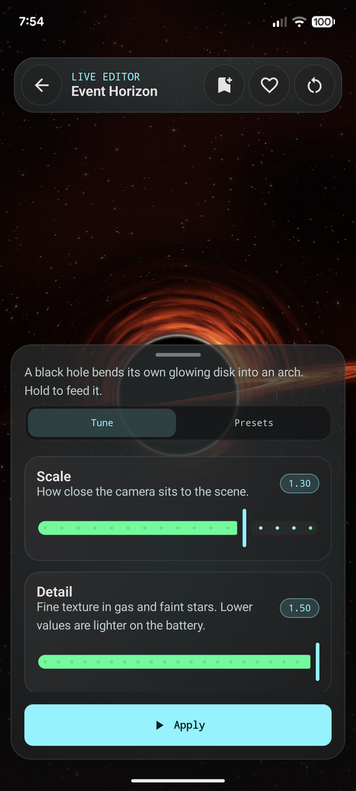
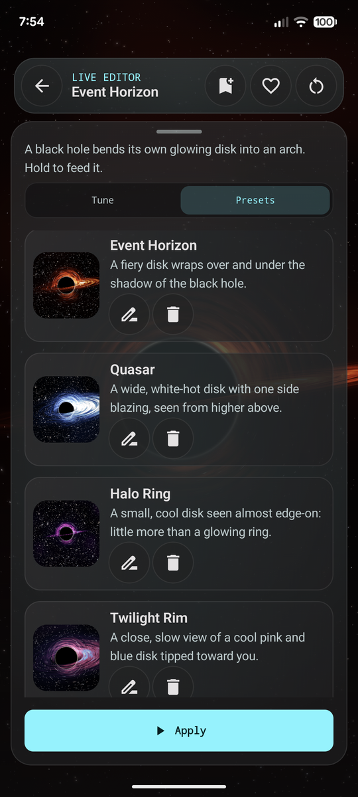
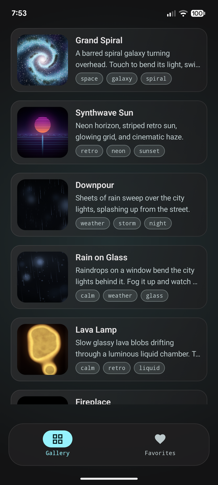

Touch & Tilt Reactive · GPU-Rendered · Android
Interactive live wallpapers
that react to your touch.
Your phone screen shouldn't be a frozen photo or a repetitive 3-second video loop. FluxWall generates live mathematical fluid, cosmic, and geometric worlds in real time — responding instantly to your finger taps, swipes, and device tilt.
- Responsive Touch Ripples
- Gyroscope Tilt Parallax
- Smooth 60 FPS GPU Engine
- Never Repeats A Loop

Drawn Live vs Video Loops
Why pre-recorded video wallpapers
feel lifeless and repetitive.
Most "live" wallpaper apps simply download short MP4 video clips that replay the exact same sequence on repeat. Because they are pre-recorded, they can never react to you. FluxWall computes every pixel live on your phone's graphics hardware.
Fixed, repetitive, and passive
- Replays the identical 3-second video loop thousands of times a day
- Zero interaction: tapping or swiping does nothing to the video
- Constant CPU and RAM strain from continuous video decoding
- Large 50MB+ download sizes for single video files
- Obvious jump cuts or stuttering at loop seams
Living, interactive, and evolving
- Calculated live on the GPU: never repeats the same frame twice
- Touch ripples, color shifts, and fluid swirls follow your fingertips
- Gyroscope sensor shifts the scene perspective as you tilt your phone
- Tiny app footprint (under 15MB) with 29+ procedural worlds included
- Buttery smooth 60 FPS animation with zero jarring loop points
Touch & Gyroscope Physics
Turn your screen into an interactive playground.
Every time you unlock your phone or swipe between app icons, FluxWall reacts. Watch luminous fluid streams part around your finger, create glowing shockwaves across geometric grids, or tilt your phone to reveal three-dimensional celestial horizons.
- Fluid Particle Physics: Tap or drag to spawn vibrant pigment currents that diffuse naturally across your screen.
- Gyroscope Perspective: Built-in accelerometer integration shifts camera depth as you rotate your phone.
- Calm & Active Modes: Choose between highly reactive play worlds or soothing ambient flows that drift peacefully in the background.

Real-Time Control Studio
Tweak physics, speed, and glow to match your taste.
You are never locked into someone else's aesthetic choices. Want a faster cosmic flight or a slower, dreamlike fluid flow? FluxWall gives you dedicated live sliders for motion tempo, particle density, glow bloom, and color saturation.
- Live Slider Response: Drag any slider and watch the physics adjust in real time without restarting.
- Color Palette Mastery: Shift from vibrant synthwave neon to subtle, minimalist monochrome with one touch.
- Try It In Your Browser: Test the exact same interactive sliders right on our interactive web studio.

Saved Styles & Presets
Bookmark your best interactive creations.
When you discover the perfect combination of speed, color balance, and touch response, save it to your personal favorites with a single tap. Switch between a calm work setup during the day and a vibrant neon aesthetic for the evening.
- Instant Bookmarks: Keep your favorite interactive worlds at your fingertips.
- One-Tap Presets: Quickly jump between curated colorways designed by digital artists.
- Zero Cloud Dependency: All favorites and custom presets are stored securely on your phone.

Technology Comparison
Real-Time GPU Shaders vs.
Pre-Recorded Video Wallpapers.
Why procedural rendering delivers a superior interactive experience on Android devices.
| Capability | FluxWall GPU Shaders | Pre-Recorded Video Loops | Static Wallpaper Images |
|---|---|---|---|
| Touch Interaction | ✓ Real-time ripples, waves & particle response | ✕ Non-responsive (just video playback) | ✕ None (static picture) |
| Gyroscope Tilt | ✓ 3D perspective and lighting shifts | ✕ None (flat 2D file) | ✕ None (flat 2D file) |
| Animation Variety | ✓ Infinite procedural variation (never repeats) | ✕ 3-second repetitive loop | ✕ Zero movement |
| Customization Controls | ✓ Adjust speed, color palette, glow & density | ✕ None (video is pre-baked) | ✕ Crop/filter only |
| Frame Rate | ✓ Smooth 60 FPS native GPU rendering | ✕ Compressed 24-30 FPS video | ✓ N/A |
| Download Size | ✓ ~15MB total (29+ procedural worlds) | ✕ 50MB–200MB per video clip | ✓ 2MB–10MB per photo |
| In-App Ads & Cost | ✓ 100% Free, Zero Ads | ✕ Often paywalled or ad-supported | ✕ Often bundled with ad bloat |
Frequently Asked Questions
Everything you need to know
about interactive wallpapers.
How do interactive live wallpapers work on Android? +
Unlike pre-recorded video loops, FluxWall compiles procedural OpenGL shaders that calculate mathematical color, light, and physics directly on your phone's GPU for every single frame. When you touch the screen or tilt your device, your touch coordinates and accelerometer data feed directly into the shader equations, creating instant ripple and perspective reactions.
Which FluxWall wallpapers respond to touch or tilt? +
Many wallpapers feature dynamic input reactions. Magic Fluids and Ripple generate fluid waves under your fingertips, Event Horizon warps gravitational space when held, and 3D scenes shift perspective as you tilt your phone. Calmer ambient worlds drift gently without requiring touch.
Does real-time touch interaction cause frame drops or lag? +
No. FluxWall's rendering engine is optimized with efficient GLSL shaders and zero unnecessary CPU allocations, maintaining buttery smooth 60 FPS animations on modern Android hardware without hitching or input lag.
Can I test interactive wallpapers in my web browser before downloading? +
Yes! The FluxWall home page features a browser-based WebGL preview editor where you can experiment with real shader parameters such as colors, glow, speed, and motion live on your computer or mobile browser.
Are interactive features free to use? +
Yes. All interactive shaders, controls, presets, and customization options are 100% free with no ads and no account needed.
Can I set interactive wallpapers on my lock screen? +
Yes, on Android versions and launchers that support live wallpapers on the lock screen. When setting FluxWall as your wallpaper, Android will give you the option to apply it to your Home Screen, Lock Screen, or both.
Transform your home screen
Make your screen move.
Interactive, smooth, and ad-free.
Bring your Android screen to life with touch-reactive fluid dynamics, cosmic horizons, and generative art. Download free on Google Play.
Free download · Compatible with Android 8.0+ · Package com.rrapps.infinitetunnel